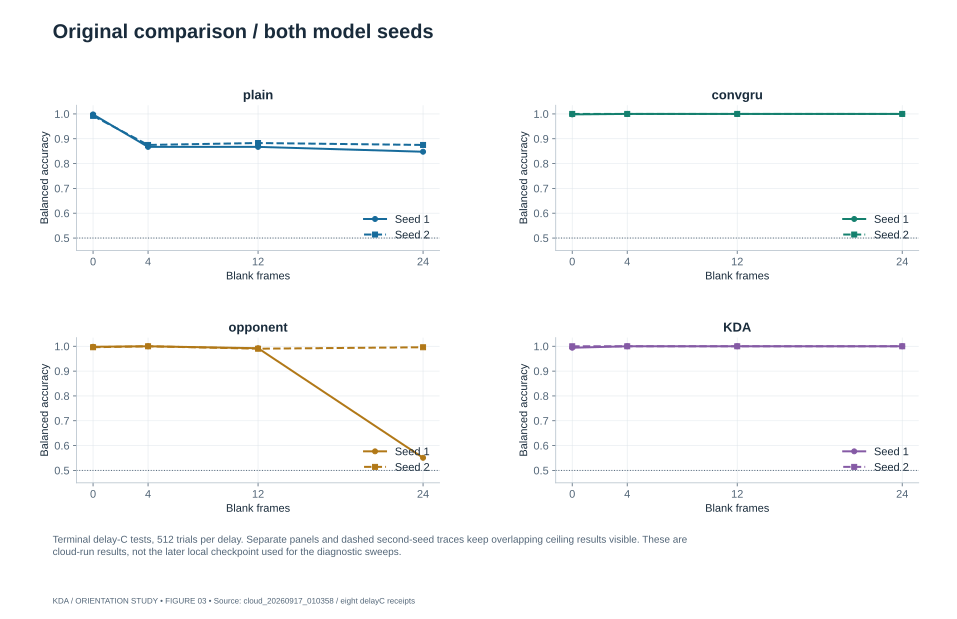
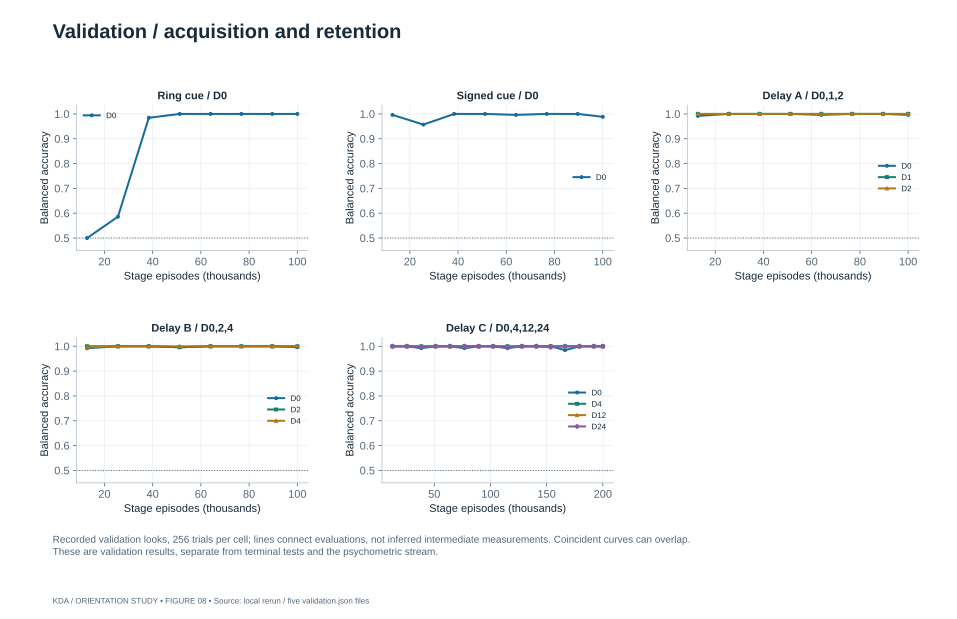
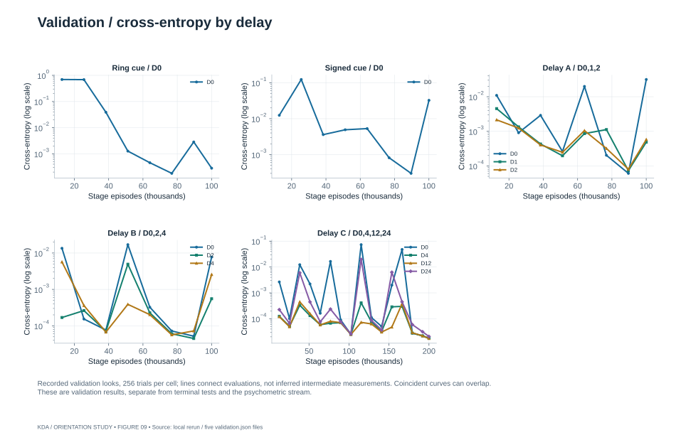
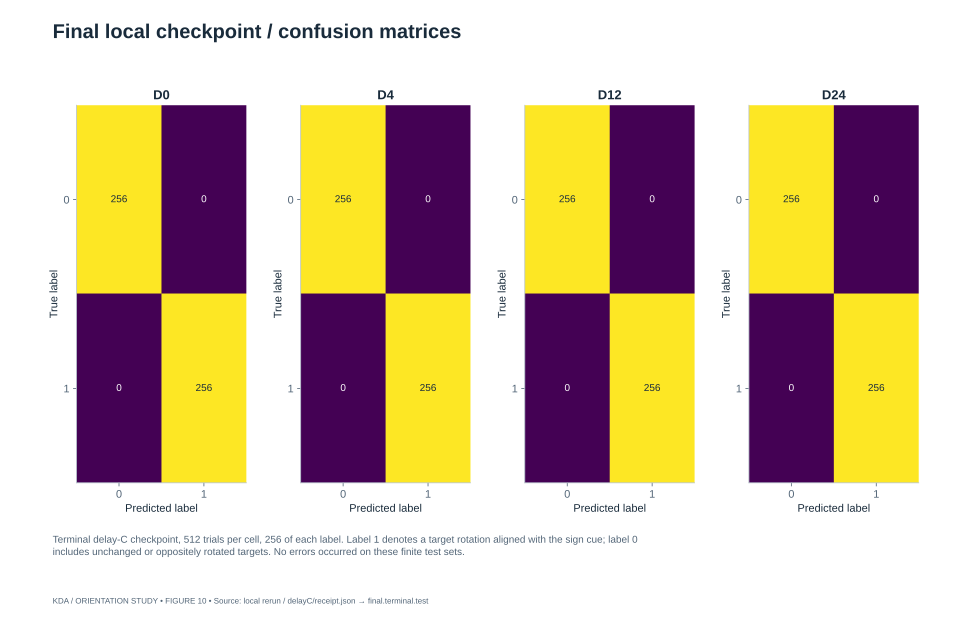
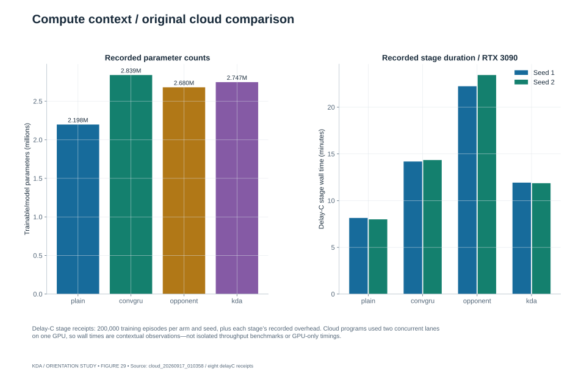

03Original comparison / both model seeds

Terminal delay-C tests, 512 trials per delay. Separate panels and dashed second-seed traces keep overlapping ceiling results visible. These are cloud-run results, not the later local checkpoint used for the diagnostic sweeps.
08Validation / acquisition and retention

Recorded validation looks, 256 trials per cell; lines connect evaluations, not inferred intermediate measurements. Coincident curves can overlap. These are validation results, separate from terminal tests and the psychometric stream.
09Validation / cross-entropy by delay

Recorded validation looks, 256 trials per cell; lines connect evaluations, not inferred intermediate measurements. Coincident curves can overlap. These are validation results, separate from terminal tests and the psychometric stream.
10Final local checkpoint / confusion matrices

Terminal delay-C checkpoint, 512 trials per cell, 256 of each label. Label 1 denotes a target rotation aligned with the sign cue; label 0 includes unchanged or oppositely rotated targets. No errors occurred on these finite test sets.
29Compute context / original cloud comparison

Delay-C stage receipts: 200,000 training episodes per arm and seed, plus each stage’s recorded overhead. Cloud programs used two concurrent lanes on one GPU, so wall times are contextual observations—not isolated throughput benchmarks or GPU-only timings.